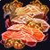

Fishbrul Special

Prepares 5 Fishbrul Specials.
Recipe Discovery
- Zone: Dalaran (Legion)
- NPC: Nomi
- Discovery: Nomi's Test Kitchen
Effect
Restores 28846 health and 14423 mana over 20 sec.
Must remain seated while eating.
If you spend at least 10 seconds eating you will become well fed and gain
a chance while attacking to unleash a volley of Pepper Breath fireballs,
each dealing 174 Fire damage. This bonus lasts 1 hour.
Reagents
- 1x Drogbar-Style Salmon
- 5x Cursed Queenfish
- 5x Mossgill Perch
- 5x Black Barracuda
- 10x Stonedark Snail
- 5x Dalapeño Pepper
Directions
- Go to a kitchen in a capital city (e.g. Dalaran (Legion)).
- Open the professions tab and click on the "Cooking" profession.
- Check to see if you have all of the required reagents.
- Stand next to a stove, oven, or campfire.
- Click "Cook" (2 second cast)!